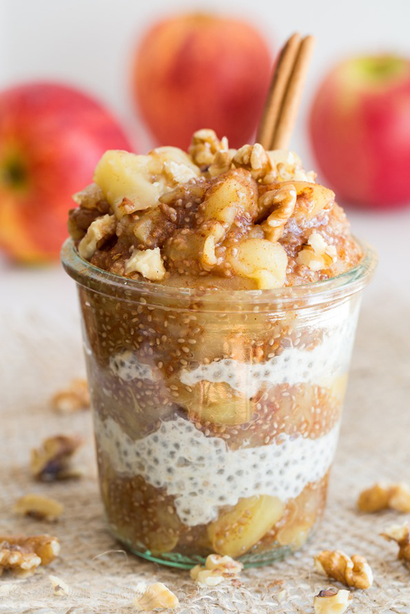
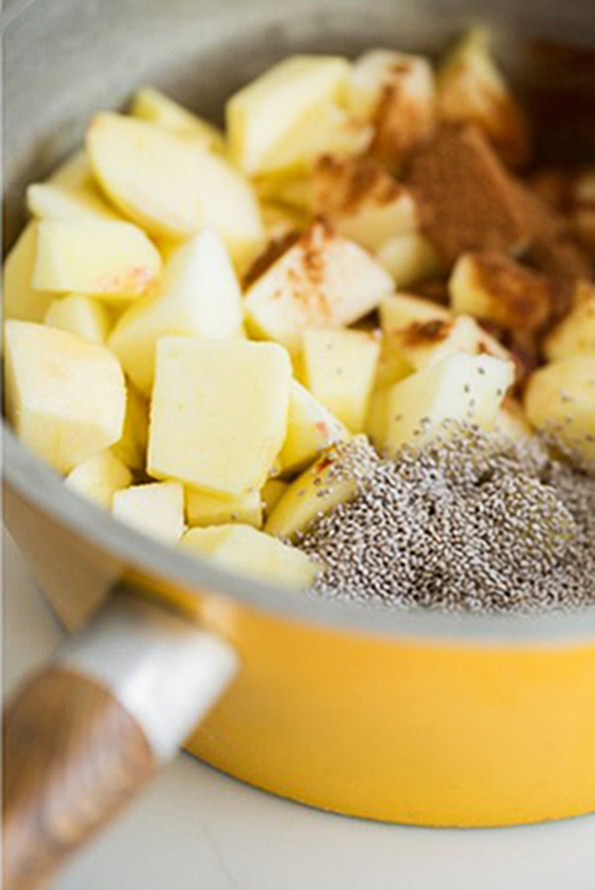

Sugar-free apple pie chia seed jam + parfait

- Yield: 2 parfaits
- Soak time: 1-2 hours or overnight
- Prep time: 15 minutes
- Cook time: 20 minutes
This nontraditional jam is thickened with omega-3 fatty acid rich chia seeds and is free from added sugar.
Enjoy it on toast, layered in parfaits, or on top of oatmeal.
INGREDIENTS
FOR THE JAM (MAKES 1-1.5 CUPS)
- 3 large apples, peeled and diced
- 3/4 cup 100% pure apple juice
- 2 tablespoons chia seeds
- 3/4-1 teaspoon cinnamon
- 1/2 teaspoon pure vanilla extract (optional)
- pinch of fine grain sea salt (optional)
FOR THE PARFAIT:
- 1/2 cup gluten-free rolled oats
- 1 + 1/4 cups homemade or store-bought almond milk
- 2 tablespoons chia seeds
- 1 teaspoon pure vanilla extract
- 1/2 teaspoon cinnamon

DIRECTIONS
- For the jam: Add all jam ingredients into a medium pot and stir to combine. Bring mixture to a low boil.
Reduce heat to medium-low, cover, and simmer for 15-20 minutes, stirring every 5 minutes or so.
When the apples are fork tender, remove from heat and mash 50% of the mixture to thicken. Set aside to cool. - For the vegan overnight oats: Combine the oats, chia seeds, almond milk, vanilla, and cinnamon in a small bowl.
Whisk to combine. Place in the fridge overnight, or for at least 1-2 hours to thicken.
Once the oats are softened and the liquid is mostly absorbed, it's ready. You can thin it out with more milk if needed or thicken it with more chia seeds. - To make each parfait: Layer the vegan overnight oats with the apple pie jam, a few spoonfuls of each per layer.
Add toasted chopped walnuts on top of each layer if desired. - Store leftover jam in an air-tight container or jar in the fridge. Should last for at least 1-2 weeks.
NUTRITION INFORMATION
Serving Size 1 of 2 parfaits | Calories 390 calories | Total Fat 12 grams
Saturated Fat 1.5 grams | Sodium 200 milligrams | Total Carbohydrates 67 grams
Fiber 19 grams | Sugar 30 grams | Protein 9 grams
* Nutrition data is approximate and is for informational purposes only.